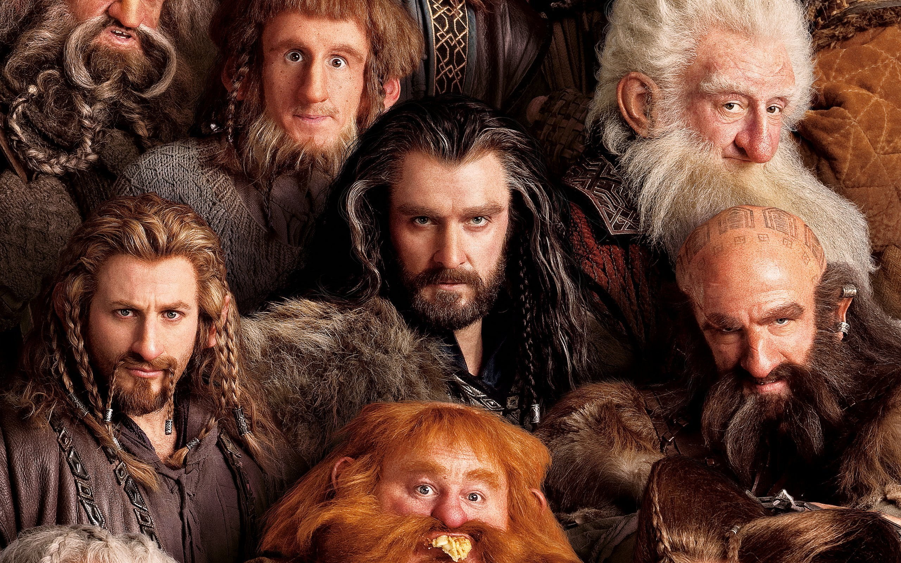
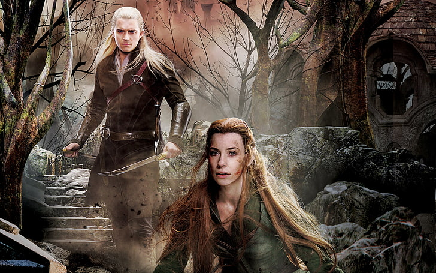
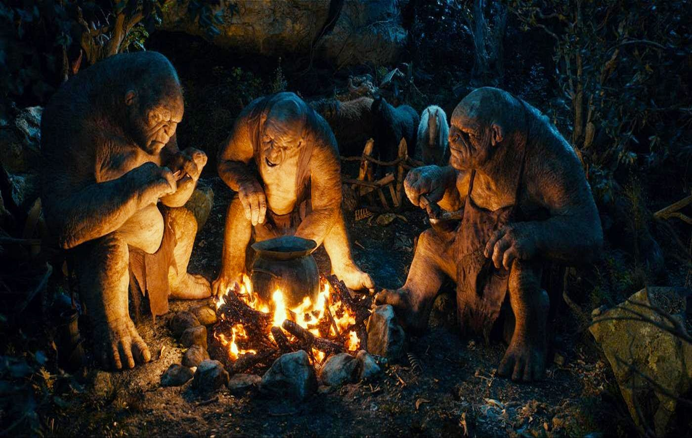
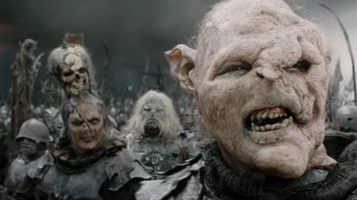
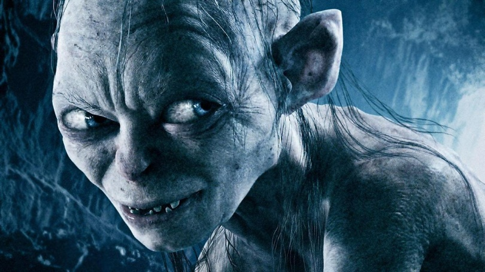

La Torre de Elestir erigida en los acantilados del norte, frente al Mar de
Belegaer.Construida con piedra blanca y techos oscuros como la noche, su torre
se
alza entre
nubes perpetuas.
Vestuario:
Única larga de azul profundo
Cinturón de cuero negro
Capa de viaje gris oscuro
Sombrero de ala ancha
Botas altas de cuero encantado
Reliquias:
Staff de Elenaran ("vara de estrella")
Anillo de Lumbre Silenciosa
Grimorio de las Voces Dormidas
Fragmento del Espejo de Varda

Los Enanos de las Montañas de Hierro
Habitat:
Los enanos habitan en vastas fortalezas subterráneas talladas dentro de las
montañas, como Erebor, Khazad-dûm o las Montañas de Hierro.
Vestuario:
Túnicas de lana gruesa o cuero
Cota de malla corta bajo el pecho
Botas pesadas de hierro flexible
Cinturones de anillas con herramientas
Capuchas con ribetes de piel
Armas:
Hachas de guerra
Martillos de combate
Hachas dobles
Escudos redondos

Los Elfos del Bosque Estelar
Habitat:
Bosque Negro: más salvaje, pero lleno de torres élficas ocultas entre las
copas.Sus
hogares son salones altos en árboles gigantes, puentes colgantes, terrazas
cubiertas
de hojas y estructuras abiertas al cielo.
Vestuario:
Túnicas de lana gruesa o cuero
Cinturones finos adornados con gemas o broches en forma de hoja, estrella o flor
Capas élficas como las de Lórien
Botas suaves y silenciosas
Armas:
Arcos largos élficos
Espadas curvas o dobles
Dagas de hoja fina
Magia natural

Los Trolls de las Montañas
Habitat:
Los trolls habitan en regiones montañosas, cavernas profundas y ruinas
olvidadas,
lejos de la luz del sol, que les resulta letal o debilitante.
Vestuario:
Pieles de animales mal curtidas
Pedazos de armadura robada o forjada por orcos
Cadenas oxidadas, cráneos colgantes o trofeos grotescos
Cinturones de anillas con herramientas
Su vestimenta no protege, pero los hace aún más aterradores en batalla.
Armas:
Mazazos gigantes
Cadenas con garfios o bolas de pinchos
Rocas
Puños y garras

Los Orcos de las Sombras
Habitat:
Los orcos habitan en lugares oscuros, húmedos y enfermos, creados o conquistados
por
la fuerza. Sus dominios no son construidos, sino excavados, violando la tierra
como
si buscaran vengarse de ella.
Vestuario:
Armaduras oxidadas
Capuchas, cascos o máscaras
Ropas desgarradas
Colores apagados: negro, gris sucio o sangre seca
Armas:
Espadas dentadas o machetes
Lanzas y picas improvisadas
Arcos toscos y flechas negras
Armas combinadas

Gollum - El Acechador de las Profundidades
Habitat:
Habitó en las profundidades más oscuras de las Montañas Nubladas, lejos de la
luz y
de todo ser viviente. Su morada era una caverna húmeda y helada, escondida más
allá
de ríos subterráneos y grietas insondables.
Vestuario:
Gollum no lleva vestimenta tradicional
Suele llevar apenas un taparrabos o trapo desgastado
No necesita abrigo: su obsesión lo mantiene en movimiento constante
Armas:
Dientes y uñas: afiladas como cuchillas
Rocas afiladas, huesos, o garfios improvisados
Cuerdas delgadas que a veces usa para atrapar o estrangular